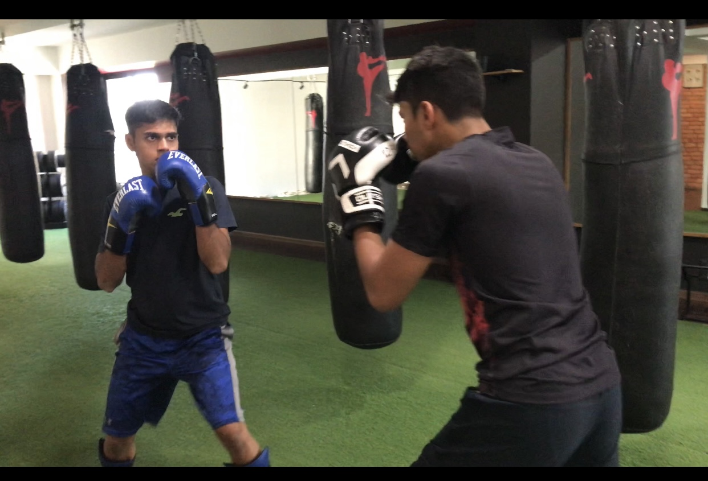

Kickboxing is a form of martial arts derived from karate. It borrows moves from multiple types of martial arts including full-contact karate, Muay Thai, and boxing.Although the name implies kicking as a priority, this type of martial art uses both hands and feet as points of contact. Kicks and punches are both used during kickboxing. Harsh is very attached to kickboxing as he has been doing it since many years. He has played in many tournaments and have won many as well.
